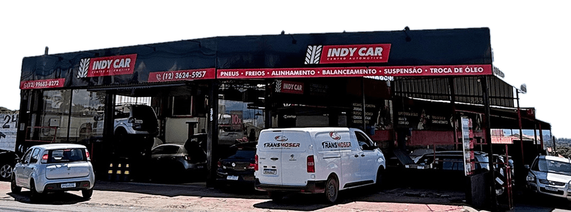
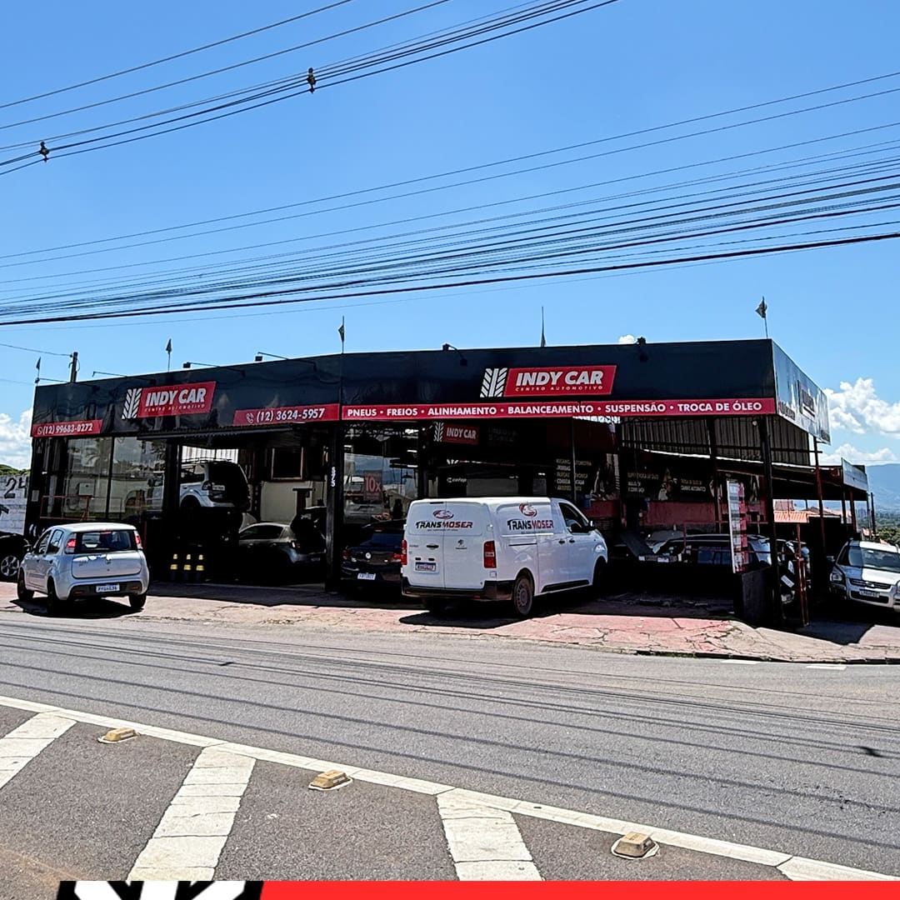

Troca de Óleo de Câmbio
Troca de óleo do câmbio automático 100% na máquina (diálise): renova todo o fluido, não só uma parte, e ajuda a proteger o conversor de torque.
Mecânica em geral para carros nacionais e importados, com garantia de 12 meses em peças e mão de obra. Comece pelo diagnóstico digital gratuito: scanner + foto, cerca de 30 minutos, sem compromisso.
A IndyCar se estabeleceu como referência em Taubaté ao profissionalizar o cuidado automotivo. Unimos a experiência de mecânicos veteranos com a precisão da tecnologia moderna — sempre com orçamentos precisos, justos e transparentes.
Nosso maior compromisso é resgatar a sua confiança. Sabemos que deixar o carro na oficina gera insegurança. Por isso, aqui a transparência é absoluta e a honestidade é a base de cada aperto de parafuso.

Scanners de última geração e ferramentas de precisão — da revisão básica à troca de óleo do câmbio automático, seguindo rigorosamente os manuais das montadoras nacionais e importadas.
Você acompanha o diagnóstico, entende o defeito e aprova apenas o necessário. Sem troca de peças à toa e sem surpresas na hora de pagar.
Ficar sem carro atrapalha a rotina. Consulte as condições para a gente buscar e devolver o seu carro em Taubaté.
Mecânicos veteranos, treinados nos manuais das montadoras. Fotos da equipe em breve.
Do óleo do motor ao óleo do câmbio automático: o que o seu carro precisa em um só lugar, com garantia de 12 meses em peças e mão de obra.
Troca de óleo do câmbio automático 100% na máquina (diálise): renova todo o fluido, não só uma parte, e ajuda a proteger o conversor de torque.
Luz acesa no painel? O scanner lê as falhas da central eletrônica e a gente mostra, com foto, o que encontrou.
Vazamento de óleo, barulho estranho ou esquentando? A gente revisa e explica antes de trocar qualquer peça.
Óleo e filtro novos, no padrão do manual do seu carro.
Chiado ou freio fraco? Pastilhas, discos e fluido de freio.
Carro batendo ou balançando? Dianteiros e traseiros.
Troca preventiva com tensor, no intervalo que o manual do carro indica.
Pneu novo, com a montagem feita aqui na oficina.
Alinhamento, balanceamento, cambagem e caster.
Kit completo e cabo, para o pedal voltar macio.
Pivôs, buchas, terminais, coifas e rolamentos.
Carro falhando ou bebendo mais? Limpeza dos bicos injetores por ultrassom para recuperar a potência e a economia de combustível.
Sem custo e sem compromisso. Você sai sabendo o que o carro tem e decide com calma.
Conta o que o carro está fazendo e escolhe um horário de segunda a sábado, das 8h às 17h30. Ver horários livres.
Av. Bandeirantes, 875, Parque Paduan. Se precisar, pergunte sobre o leva e traz (consulte condições).
O scanner lê as falhas da central eletrônica e a gente fotografa o que encontrou no carro.
Mostramos as fotos, explicamos o defeito e você aprova só o que for necessário.
Toque num horário e o pedido já vai com ele.

Buscamos e entregamos o seu carro em Taubaté (consulte condições). Você nem precisa parar o seu dia.
Da revisão completa ao câmbio automático com troca 100% na máquina (diálise). Tudo em um só lugar, com a mesma qualidade.
Trabalho com garantia de verdade — em peças e mão de obra. Atendemos nacionais e importados.
Diagnóstico preciso e orçamento sem surpresas. Explicamos cada serviço e só fazemos com a sua aprovação.
A gente não escreve depoimento por ninguém. As avaliações estão no Google, do jeito que os clientes escreveram.
O que os motoristas de Taubaté mais perguntam antes de trazer o carro. Não achou a sua dúvida? Chama a gente no WhatsApp.
O ideal é agendar pelo WhatsApp (12) 99683-0272 para garantir o seu horário — a resposta é rápida em horário comercial. Atendemos de segunda a sábado, das 8h às 17h30.
Não. O diagnóstico digital é gratuito e sem compromisso, com scanner + foto, em cerca de 30 minutos. Usamos o scanner para identificar falhas com precisão. Você acompanha tudo, entende o defeito e só aprova o que for necessário. Veja o passo a passo.
Sim — nacionais e importados, de Toyota, Honda e Volkswagen a BMW e Mercedes. Trabalhamos seguindo rigorosamente os manuais das montadoras, com scanners de última geração.
Fazemos a troca total do fluido 100% na máquina (diálise), renovando todo o óleo e protegendo o conversor de torque. Quer saber se serve para o seu carro? É só chamar no WhatsApp.
Temos o Leva e Traz em Taubaté, conforme disponibilidade e condições. Pergunte no WhatsApp antes de agendar que a gente confirma para o seu caso.
Consulte as condições de pagamento e parcelamento. Para outras condições e formas de pagamento, é só perguntar no WhatsApp que a gente orienta na hora.
Sim — garantia de 12 meses, em peças e mão de obra, para nacionais e importados. Os detalhes da cobertura do seu serviço a gente confirma junto com o orçamento, direto no WhatsApp.
Segunda a sábado das 8h às 17h30. Domingo a oficina fica fechada.
Na Av. Bandeirantes, 875 – Parque Paduan, Taubaté-SP (CEP 12070-100). O mapa e o botão de rota estão na seção de contato. Se ficar melhor para você, pergunte sobre o Leva e Traz em Taubaté (consulte condições).
Pelo celular, em tempo real: quando o carro entra na oficina, você recebe no WhatsApp o link Acompanhar meu carro, com cada etapa, as fotos e os extras para aprovar ou recusar. Aqui a transparência é absoluta: você entende o defeito e aprova apenas o necessário — sem surpresas na hora de pagar. Qualquer dúvida durante o serviço, é só falar com a gente no WhatsApp (12) 99683-0272 ou no fixo (12) 3624-5957.
Sim. Não fazemos funilaria e pintura, carga de gás ou conserto do ar-condicionado (a higienização a gente faz), parte elétrica como alternador e motor de arranque, reparo interno de câmbio automático, retífica de motor, GNV nem guincho. Também não atendemos carros 100% elétricos, rebaixados, modificados ou caminhões. Na dúvida, pergunte no WhatsApp.
Av. Bandeirantes, 875 - Parque Paduan
Taubaté - SP, 12070-100
(12) 99683-0272 · WhatsApp · Ligar
(12) 3624-5957 · Fixo
Segunda a sábado: 8h às 17h30
Domingo: fechado
Ver horários livres agora
Diagnóstico digital gratuito: scanner + foto, cerca de 30 minutos, sem compromisso. Garantia de 12 meses em peças e mão de obra, pagamento sob consulta e o cuidado de quem tem +18 anos de estrada. Agende pelo WhatsApp.
Sem senha e sem cadastro: o link chega no seu WhatsApp quando o carro entra na IndyCar.
Não recebeu o seu link? Peça pelo WhatsApp que a equipe manda na hora.
Agende seu diagnóstico digital gratuito: scanner + foto, cerca de 30 minutos, sem compromisso.
Resposta rápida pelo WhatsApp em horário comercial.Preencha e a equipe recebe o pedido na hora; a confirmação vem pelo WhatsApp. Sem compromisso.
A equipe confirma o horário com você pelo WhatsApp, de segunda a sábado, das 8h às 17h30.
Protocolo
Já é cliente? Seu carro e seu histórico ficam na Minha IndyCar.
Quer adiantar? Abrir no WhatsApp